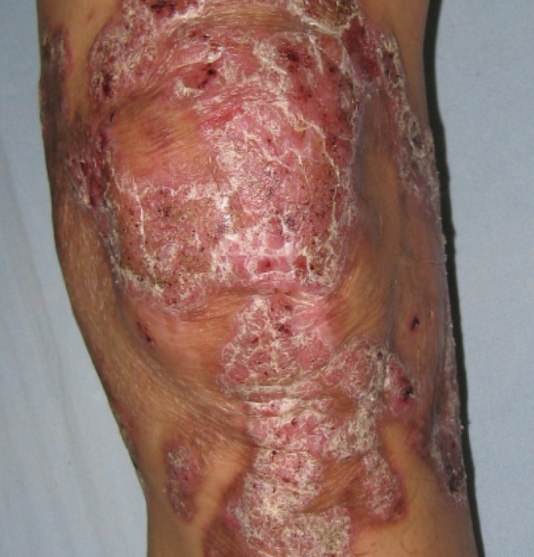
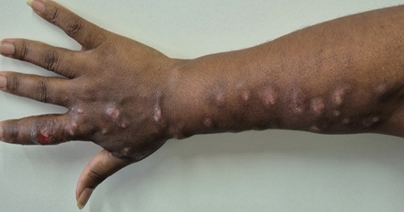
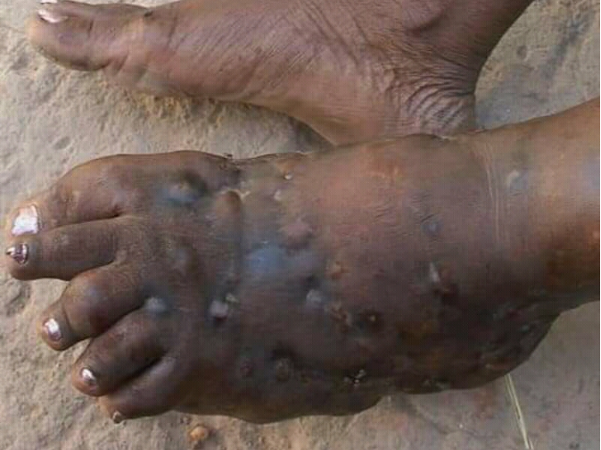
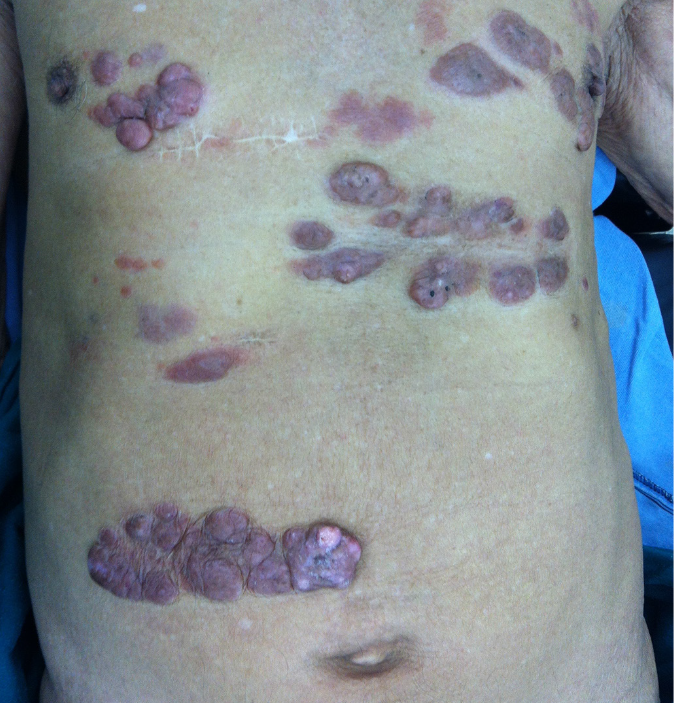

Aula 2
Micoses de implantação
As micoses de implantação, ou micoses subcutâneas, são infecções causadas por fungos introduzidos diretamente na derme ou tecido subcutâneo por trauma penetrante e geram um processo inflamatório granulomatoso. Há casos em que esse trauma não é relatado ou percebido, muitas vezes devido ao grande intervalo de tempo entre o trauma e a percepção das lesões. Em geral, predominam em regiões de clima tropical. A seguir você conhecerá as micoses de implantação mais relevantes no Brasil.
Cromoblastomicose
Essa é uma micose granulomatosa e supurativa, de evolução crônica e indolente, localizada na pele e tecido subcutâneo, podendo ser causada pela inoculação de diferentes espécies de fungos melanizados (demáceos, negros ou pigmentados), que se apresentam em vida parasitária como células muriformes, elementos fundamentais para o diagnóstico da doença. As lesões da cromoblastomicose são polimórficas e, nos estágios crônicos, constituem um verdadeiro desafio terapêutico para pacientes e médicos.
Fungos demáceos de diferentes gêneros são os agentes etiológicos responsáveis pela cromoblastomicose. Os mais prevalentes são membros do gênero Fonsecaea, incluindo F. pedrosoi, F. monophora e F. nubica, ocorrendo em clima úmido e quente, enquanto Cladophialophora carrionii predomina em áreas semiáridas.
Outros agentes importantes são Phialophora verrucosa, Rhinocladiella spp. (R. aquaspersa, R. tropicalis, R. similis) e Exophiala spp. (E. dermatitidis, E. jeanselmei, E. spinifera). Em vida parasitária, isto é, nos tecidos do hospedeiro, esses fungos são encontrados como células muriformes, elemento patognomônico da doença. Essas estruturas são também conhecidas como células escleróticas, corpos de Medlar ou corpos fumagoides, constituindo uma adaptação biológica para sobreviver no hospedeiro.

Placa avermelhada, ceratótica, com áreas verruco-crostosas, na pele do joelho esquerdo de um homem
A identificação presumida da espécie pode ser feita por métodos micológicos convencionais, como macro e micromorfologia e características fisiológicas. Entretanto, a identificação definitiva do agente deve ser baseada na sequência molecular de genes específicos.
As células muriformes apresentam paredes celulares espessas e pigmentadas pela melanina. Possuem formato poliédrico, medindo 5 a 12 µm de diâmetro, e dividem-se por fissão binária, formando dois planos distintos de septação. Nos meios de cultura, os agentes da cromoblastomicose crescem filamentosos, aveludados e com pigmentação escura.
Os fungos melanizados são ubíquos na natureza e frequentemente isolados de nichos orgânicos e inorgânicos, notadamente em ambientes tropicais e subtropicais em todo o mundo. Acredita-se que, durante seu ciclo sapróbio, os agentes da cromoblastomicose vivam no solo e em diferentes partes das plantas, como espinhos, folhas, sementes espinhosas, córtex lenhoso etc.
A cromoblastomicose acomete principalmente homens adultos, trabalhadores rurais sem calçados ou roupas adequadas e que têm maior probabilidade de serem infectados por exposição ambiental traumática. É considerada uma doença ocupacional nas áreas endêmicas do mundo, como África, Ásia e América Latina, mas casos dispersos também são relatados em regiões temperadas a frias.
Após um período incerto a partir da implantação, a lesão inicial pode ser produzida no local da infecção. Acredita-se que haja um período de incubação de meses a muitos anos até o surgimento das lesões.
A lesão inicial geralmente é macular e solitária, podendo progredir para um formato papular com superfície lisa e rosada, que aumenta gradualmente ao longo de algumas semanas e, posteriormente, desenvolve uma superfície escamosa. Essa lesão pode avançar e apresentar variação de formas clínicas, gerando múltiplos diagnósticos diferenciais com doenças infecciosas e não infecciosas. De acordo com a classificação adaptada por Carrion, as lesões da cromoblastomicose podem ser nodulares, tumorais, verrucosas, cicatriciais ou em placas. Em casos avançados, crônicos e mais graves, diferentes tipos de lesões podem ser observados simultaneamente no mesmo paciente. Também é possível classificá-las quanto à gravidade e extensão em leves (< 5 cm), moderadas (5 a 15 cm) ou graves (> 15 cm), auxiliando a equipe de saúde na definição das estratégias terapêuticas.
O contato frequente com plantas e terra, especialmente em atividades rurais, constitui importante condição predisponente. Embora esses fungos estejam amplamente presentes na natureza e traumas sejam comuns em pessoas que vivem em áreas endêmicas, a ocorrência da doença em humanos é esporádica, sugerindo possível suscetibilidade genética.
Esporotricose
A esporotricose é a micose de implantação mais prevalente e globalmente distribuída, causada por espécies do gênero Sporothrix. A esporotricose humana é de evolução subaguda ou crônica, geralmente benigna e restrita à pele e a vasos linfáticos adjacentes, causando úlceras, nódulos e abscessos. Os agentes etiológicos mais prevalentes no Brasil são Sporothrix brasiliensis e S. schenckii, mas existem outros como S. pallida, S. globosa, S. luriei, S. mexicana e S. chilensis.
O solo rico em matéria vegetal, sob determinadas condições de temperatura e umidade, atua como reservatório natural dos fungos responsáveis pela esporotricose.

Esporotricose forma linfocutânea – Mulher de 39 anos com lesão ulcerada no dedo indicador da mão direita e outras lesões nódulo-ulceradas ao longo do trajeto linfático do membro superior direito (clássica linfangite nodular)
Ocorre principalmente pelo contato do fungo com a pele ou mucosa, por trauma decorrente de acidentes com espinhos, palha ou lascas de madeira; contato com vegetais em decomposição; traumas relacionados a animais, sendo o gato o mais comum. Geralmente se adquire a infecção pela implantação, traumática ou não, do fungo na pele ou mucosa e, raramente, por inalação.
Normalmente, não há transmissão inter-humana. Gatos podem transmitir a esporotricose por arranhadura, mordedura e contato com secreções ou exsudatos de lesões cutaneomucosas e respiratórias.
O período de incubação da esporotricose é variável, podendo ir de uma semana até cerca de seis meses após a inoculação, ou seja, a entrada do fungo no organismo humano. As formas clínicas mais observadas são a cutânea fixa, a linfocutânea, a cutânea disseminada e a extracutânea/disseminada. Pessoas que lidam frequentemente com terra e plantas apresentam maior exposição ao agente infeccioso, sendo que, no Brasil, a principal via de transmissão identificada é o contato com gatos doentes. Em relação à suscetibilidade, todos os indivíduos podem ser acometidos, e a infecção não gera imunidade duradoura. Além disso, pessoas com imunidade comprometida podem desenvolver formas mais graves e disseminadas da doença.
Micetomas
Essa doença é caracterizada por uma tríade clínica, que inclui lesões de aspecto tumoral com fístulas que drenam pequenos grãos. Nas formas iniciais, a tumefação pode estar ausente. Etimologicamente, o termo micetoma significa “tumor de filamentos”, uma vez que pode ser tanto de etiologia fúngica (eumicetoma), como bacteriana (actinomicetoma). Neste último grupo seus agentes são bactérias filamentosas aeróbicas pertencentes à ordem dos Actinomycetales. São conhecidos por vários nomes, como doença fúngica da Índia, doença de Godfrey e Eyre, pé de Madura, maduromicose etc. Focaremos o estudo nos eumicetomas.
Os eumicetomas são causados por vários fungos hialinos ou melanizados/demáceos. Mais de 30 espécies foram associadas ao eumicetoma, algumas das quais (fungos melanizados) podem causar feo-hifomicose e cromoblastomicose. Esses agentes são classificados de acordo com a cor dos grãos, que pode ser preta, amarela ou branca.
Os grãos consistem em agregados de hifas fúngicas incrustadas em uma matéria dura semelhante a concreto. Mais de 90% dos casos de eumicetoma notificados no mundo são causados por quatro agentes: Madurella mycetomatis, M. grisea, Leptosphaeria senegalensis e Scedosporium apiospermum (Pseudallescheria boydii). Menos frequentemente, Biatriospora mackinnonii (P. mackinnonii) e Pseudochaetosphaeronema larense (Chaetosphaeronema larense) estão envolvidos. À exceção de S. apiospermum, que é o provável estado assexuado da espécie P. boydii, os demais são todos fungos melanizados (negros), causando o “micetoma de grão preto”. Aspergillus spp., Fusarium spp. e Acremonium spp. são outros gêneros de fungos não pigmentados potenciais causadores de “micetoma de grão branco ou amarelado”.
Os agentes dos micetomas estão no ambiente e a prevalência das diferentes espécies está relacionada às características ecológicas regionais, incluindo tipo de solo, vegetação, pluviometria, temperatura e poluição.
O micetoma acomete mais comumente indivíduos que têm contato frequente e direto com o solo, principalmente aqueles que vivem em áreas rurais, como agricultores e pastores expostos a inoculações traumáticas, com solo e plantas que abrigam os agentes etiológicos.
Geralmente a doença começa como um nódulo subcutâneo único, pequeno, indolor e de crescimento lento, que geralmente é redondo e firme, mas também pode ser mole, lobulado ou, mais raramente, cístico. O nódulo aumenta lentamente de tamanho, enquanto nódulos secundários são formados, se fixando ao tecido subjacente e, por fim, desenvolvendo trajetos profundos de drenagem. Estes abrem-se para a superfície e drenam material purulento, seroso ou serossanguinolento com grãos.
O período de incubação é variável e ainda não está bem estabelecido, podendo durar de semanas a anos em função do agente etiológico envolvido e da resposta imune do hospedeiro. Na maioria dos casos, os pés estão envolvidos (80%), seguidos pelas pernas e mãos (7-6%, respectivamente).

Micetoma de pé
A doença pode acometer a pele, o tecido subcutâneo e, eventualmente, os vasos linfáticos adjacentes e a fáscia, além de músculos e ossos subjacentes. A tumoração em geral é firme e indolor, enquanto a pele sobrejacente não é eritematosa. Músculos, tendões e nervos frequentemente não sofrem infecção direta, mas danos locais extensos podem causar perda muscular, destruição óssea e deformidades nos membros secundárias à invasão óssea, resultando em osteomielite.
O micetoma ocorre com maior frequência em pessoas que lidam com plantas e terra sem o uso de calçados ou ferramentas adequadas, situação típica da vida rural. Em relação à suscetibilidade, afeta predominantemente homens, provavelmente em razão de seu maior envolvimento em atividades rurais, apresentando uma proporção entre homens e mulheres que varia de 3:1 a 5:1. Quando mulheres são acometidas, em geral também são trabalhadoras rurais. Um estudo sugeriu ainda que os níveis de progesterona nas mulheres podem inibir o crescimento de determinados agentes etiológicos do micetoma, como M. mycetomatis. A faixa etária mais frequentemente atingida está entre 20 e 40 anos, embora em áreas endêmicas a doença também possa afetar crianças e idosos.
Doença de Jorge Lobo
Essa é uma doença infecciosa granulomatosa crônica que acomete a pele e o tecido subcutâneo, principalmente com lesões queloidiformes, causada por um fungo não cultivável, atualmente denominado Paracoccidioides lobogeorgii. A doença em humanos já teve diferentes denominações e, atualmente, o nome paracoccidioidomicose lobogeorgii tem sido usado por alguns grupos.
Análises moleculares das formas leveduriformes demonstraram que o agente etiológico P. lobogeorgii pertence à família Ajellomycetaceae, assim caracterizando-o da mesma forma que os demais fungos do gênero Paracoccidioides.
Até o momento, P. lobogeorgii nunca foi isolado em cultivo, desconhecendo-se suas fontes ambientais. Acredita-se que o fungo possa apresentar termodimorfismo, vivendo saprobioticamente em nichos orgânicos e no ambiente aquático de áreas endêmicas da América Latina, especialmente na Floresta Amazônica.
O fungo é adquirido por fonte ambiental a partir de um trauma inoculador ou por simples exposição a ele.
Ocasionalmente, já foram relatados casos atribuídos a contato com golfinhos, acidentes com arraia, picadas de inseto e de cobra. Um caso humano foi relatado em um paciente norte-americano por implantação traumática após ter sido exposto à alta pressão da água em uma viagem a Salto Ángel, na Venezuela. Alguns casos também foram relatados em viajantes que visitavam áreas endêmicas. Não parece haver transmissão inter-humana. Embora haja casos esporádicos de infecções de humanos após contato com golfinhos, esse modo de transmissão é raro.
O período de incubação vai de meses a muitos anos até o surgimento das lesões. Surgem lesões cutâneas e subcutâneas um ou dois anos após a infecção traumática, que podem se iniciar como pápulas indolentes e evoluir para nódulos, placas, máculas discrômicas, gomas, placas verrucosas, úlceras, lesões cicatriciais ou nódulos tipo queloide. As lesões ulceradas podem desenvolver superinfecção bacteriana secundária, formando pústulas e exsudato purulento. Algumas lesões infiltrativas podem ser semelhantes a queloides ou mesmo à hanseníase tuberculoide. O pavilhão auricular é frequentemente acometido, assim como os membros inferiores e superiores.

Doença de Jorge Lobo disseminada com nódulos de aspecto queloideano
O envolvimento da mucosa não tem sido descrito, enquanto 10 a 25% dos pacientes podem apresentar adenomegalia linfática regional devido à disseminação linfática da infecção. Normalmente, as lesões não interferem no estado geral de saúde do paciente, podendo, em alguns casos, provocar prurido ou dor. Semelhante à cromoblastomicose, a cronicidade das lesões cutâneas associada a múltiplas coinfecções bacterianas pode levar à transformação neoplásica em alguns pacientes.
A Doença de Jorge Lobo está associada principalmente a atividades desenvolvidas em determinadas regiões amazônicas, o que constitui sua principal condição predisponente. Em relação à suscetibilidade, ela parece ser universal, embora os casos descritos até o momento estejam restritos a poucas áreas geográficas. Não há evidências de que a infecção ou a doença confiram imunidade ao indivíduo, já que o quadro clínico tende a ser crônico. Essa micose de implantação afeta preferencialmente homens imunocompetentes, em especial aqueles na faixa etária de 29 a 40 anos.